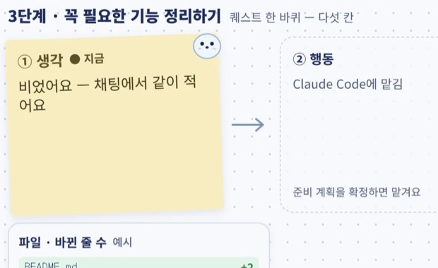
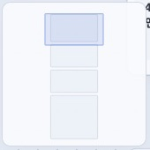
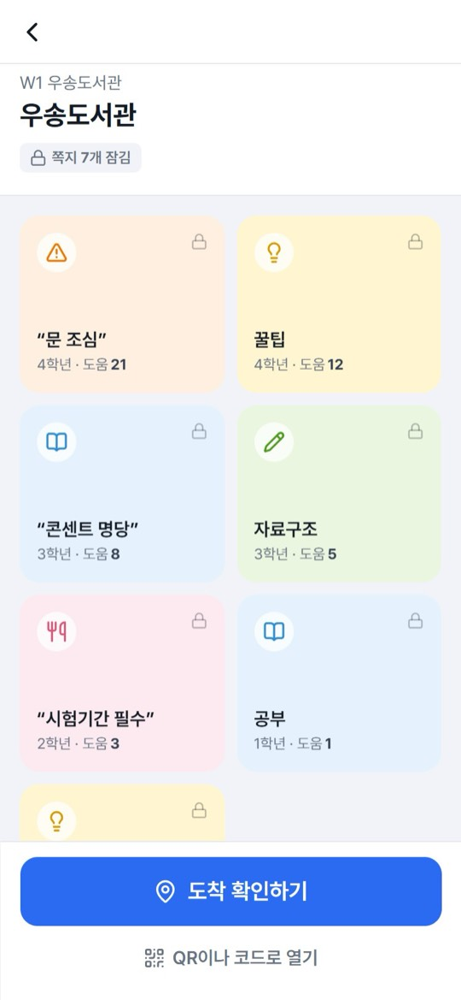
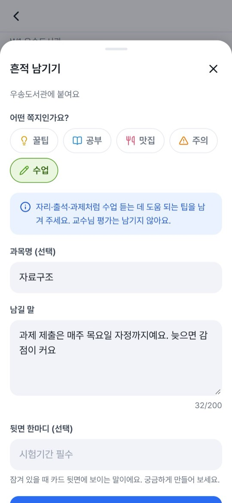
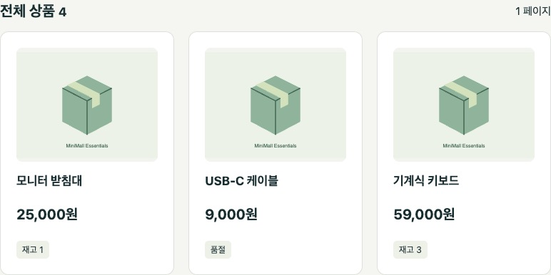
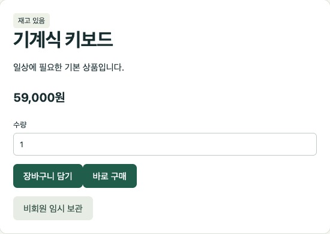

- 무엇
- AI에게 코드를 맡기는 사람이 끝까지 만들게 돕는 데스크톱 앱
- 언제
- 2026.09 – 11
- 내 몫
- 팀장 · 총괄 · AI 연동 (5인 팀)
- 결과물
- Mac · Windows · 우분투 앱, 릴리스 15번
- 상태
- 끝. 11.08 제출 · 11.13 발표 · 평가 Pass
- 근거
- 저장소 릴리스 15번 발표 덱
지금 하는 것 나의 OS, 그리고 2027년 1월 CES 2027 글로벌 연수 준비
이재엽 · 우송대학교 컴퓨터정보 · 보안전공 2학년. 끝낸 작품을 같은 다섯 칸으로 적었습니다.
Floe부터 보기작품마다 같은 다섯 칸입니다. 한 칸을 고르면 그 칸끼리 견줘집니다.













열어 볼 수 있는 근거가 있는 것만 적었습니다.
“I WILL WIN. Not immediately but Definitely.”
지금 하는 것 나의 OS(내 일과 지식을 한곳에서 보는 맥 앱), 그리고 2027년 1월 CES 2027 글로벌 연수 준비.